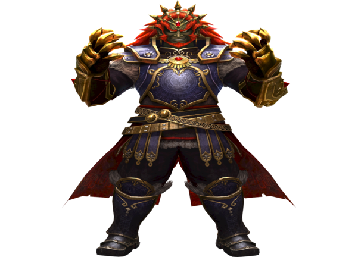
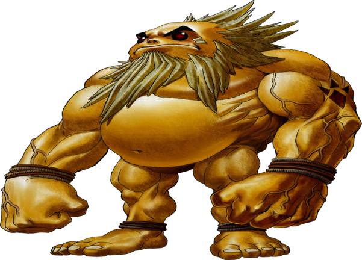

Link é um personagem fictício e o principal protagonista da série de jogos eletrônicos The Legend of Zelda da Nintendo. O personagem aparece em várias encarnações ao longo dos jogos e também em diversas mídias envolvendo a Nintendo, incluindo merchandising em quadrinhos e séries animadas.

Os Skull Kids vestem uma capa vermelha e um chapéu cobrindo uma camada inferior de roupa composta de um material semelhante a palha e tocam flauta, que também podem usar como arma para disparar projéteis. Um Skull Kid se torna um personagem central em Majora's Mask . Sob a influência da Majora's Mask , que ele roubou do Happy Mask Salesman , o Skull Kid se torna um poderoso feiticeiro. Usando esse novo poder mágico, ele causa estragos na terra de Termina , tentando destruí-la enviando a Lua em rota de colisão com a terra. Ele parece ser o principal antagonista durante a maior parte do jogo, embora ele próprio não seja mau e esteja apenas sendo controlado pelos poderes de Majora's Mask

Ganon também conhecido como Ganondorf em sua forma Gerudo, é o principal antagonista da série de jogos The Legend of Zelda. Sua primeira aparição foi em The Legend of Zelda no console NES e desde então esteve presente em muitos outros jogos da série.
Darunia é o líder dos Gorons Hyruleanos e o Irmão Juramentado do Rei de Hyrule. Apesar de sua aparência severa, ele adora música e dança e se preocupa
Princesa Ruto é filha única do rei Zora , o governante da população de Sea Zora que reside em Hyrule , e serve como atendente da divindade patrona dos Zoras, Lord Jabu-Jabu , preparando suas refeições. Quando criança, Ruto parece ser uma moleca e se mostra muito obstinada e teimosa mesmo diante do perigo, uma característica que ela moderaria e ainda se beneficiaria em sua idade adulta, quando o perigo mais uma vez ameaçou seu povo.

Navi serve como companheira de Link durante todo o jogo. Ela recebe a tarefa de ajudar Link pela Great Deku Tree. Embora ela esteja inicialmente um pouco frustrada com este dever e não tenha certeza se Link é capaz de atos de heroísmo, ela logo se torna muito mais afeiçoada a ele, e eles se tornam bons amigos. No final do jogo, Navi deixa seu parceiro por motivos desconhecidos.
Zelda, a Princesa de Hyrule, mais conhecida como simplesmente Princesa Zelda é o nome de vários membros do sexo feminino da Família Real de Hyrule, as quais desempenham um papel fundamental na série. Embora cada uma delas é a personagem titular da série Legend of Zelda, o protagonista real é o Link de cada época respectiva.